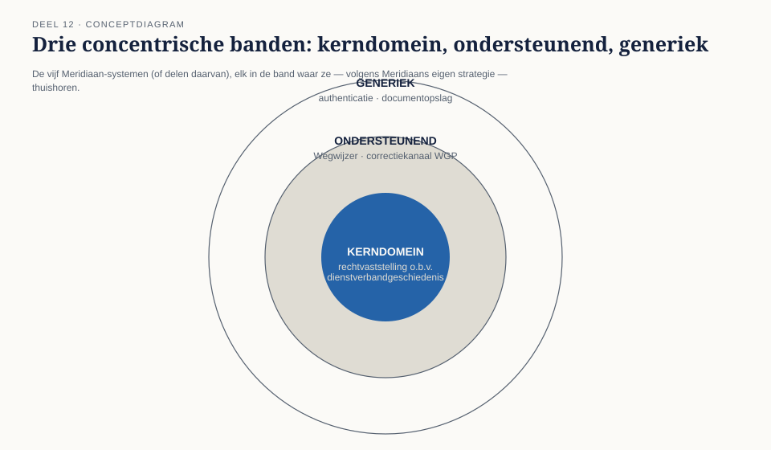
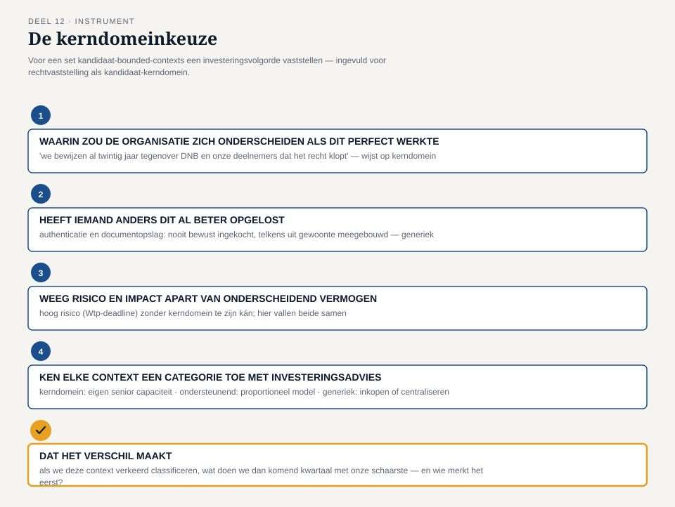

Deel 12 — Core domain versus supporting versus generic: strategisch prioriteren
Slidedeck · Ductus-cursus Domain-Driven Design · niveau 2 · deel 12 van 30 · 24 slides
Slide 1 — Titel
Domain-Driven Design — deel 12 Core domain versus supporting versus generic: strategisch prioriteren Niveau 2: professional · Programma Mutatieplatform
Slide 2 — Waar we vandaan komen
Deel 11: vijf kandidaat-bounded-contexts. Nog geen antwoord op: waar gaat de schaarse capaciteit naartoe?
Slide 3 — De vraag van Iris
“Genoeg budget voor misschien anderhalve context. Niet voor vijf.” — Iris Tanghe
Slide 4 — Drie reacties, drie soorten argumenten
Otto: waar zit het meeste werk. Vera: waar onderscheiden we ons. Karsten: waar zitten we vast aan iets dat niemand meer aanraakt.
Slide 5 — Foppe’s observatie
“Ik hoor drie soorten argumenten door elkaar. Dat zijn niet dezelfde vraag.” — Foppe Sijbesma
Slide 6 — Wat dit deel oplevert
- Kerndomein, ondersteunend, generiek — op landschapschaal
- Waarom de indeling niet universeel is
- De kerndomeinkeuze
- Twee foutrichtingen herkennen
Slide 7 — Kerndomein
Waar de organisatie zich onderscheidt. Waar een beter model direct voordeel oplevert. Eigen investering, want niemand anders doet het passend.
Slide 8 — Ondersteunend domein
Onmisbaar. Vaak complex. Niet de plek waar de schaarste als eerste naartoe gaat.
Slide 9 — Generiek domein
Een probleem dat vrijwel iedere organisatie deelt. Inkopen, hergebruiken, centraliseren — niet zelf heruitvinden.
Slide 10 —

Drie concentrische banden, de vijf Meridiaan-systemen elk in hun band
Slide 11 — Niet universeel
Zelfde systeem, andere organisatie, andere strategie — andere classificatie. De indeling volgt uit strategie, niet uit techniek.
Slide 12 — Complexiteit ≠ onderscheidend vermogen
Authenticatie kan technisch lastig zijn en toch generiek blijven. Een klein, eenvoudig stuk model kan toch het kerndomein zijn.
Slide 13 — Twee foutrichtingen
Onderinvesteren in het kerndomein. Overinvesteren in een generiek domein.
Slide 14 —

Twee pijlen die elkaar ontmoeten bij het onderwerp van dit deel
Slide 15 — Karsten’s voorbeeld
“Een eigen inlogmodule, gebouwd tijdens WGP 2.0, waar niemand meer aan durft te komen. Dat is geen kerndomein.” — Karsten Rooijakker
Slide 16 — De werkvorm van dit deel
De kerndomeinkeuze
Een investeringsvolgorde voor kandidaat-bounded-contexts, zichtbaar en verdedigbaar gemaakt.
Slide 17 — Vier stappen
- Waarin zou de organisatie zich onderscheiden?
- Heeft iemand anders dit al beter opgelost?
- Risico en impact apart wegen
- Categorie + investeringsadvies
Slide 18 —

Het invulblad, met één kandidaat-context uit het Meridiaan-landschap als voorbeeld
Slide 19 — Veld 5: het veld dat het verschil maakt
Als we deze context verkeerd classificeren,
wat doen we dan komend kwartaal met onze schaarste —
en wie merkt het als eerste?
Slide 20 — Terug naar de casus
“Het Mutatieplatform” is te grof. Twee delen, twee heel andere antwoorden op stap 1.
Slide 21 — Het kerndomein
Rechtvaststelling op basis van mutatiegeschiedenis. Verspreid over KERN, Mutatieplatform, Nabestaandenloket. Niet één systeem — één samenhangend stuk model.
Slide 22 — Iris’ scherpe vraag
“Betekent dat dat ik capaciteit uit drie teams tegelijk moet vrijmaken, in plaats van één team te versterken?” — Iris Tanghe
Slide 23 — Wat nog open staat
We weten nu wélk deel het zwaarst weegt. We weten nog niet hóe de drie delen zich tot elkaar verhouden.
Slide 24 — Volgende keer
Deel 13 — context mapping I: partnership, shared kernel, customer/supplier.